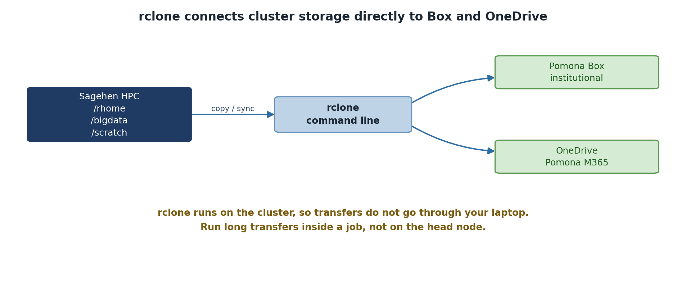

Why Cloud Storage Integration Matters
Last updated on 2026-08-27 | Edit this page
Estimated time: 15 minutes
Overview
Questions
- Why would I want to connect cloud storage to an HPC system?
- What are the benefits of using rclone?
- What cloud storage options are available at Pomona College?
Objectives
- Understand common use cases for cloud storage integration
- Learn about Box and OneDrive availability at Pomona College
- Recognize security considerations for cloud storage
Cloud storage and Pomona’s data classification
Pomona uses a 3-tier data classification (PUBLIC / PROPRIETARY / RESTRICTED). Cloud-storage rules differ by tier:
-
PUBLIC data: may be shared via Pomona Box or
OneDrive (
pomona-box:andpomona-onedrive:rclone remotes), or via institutionally approved public archives (Zenodo, OSF, GitHub). - PROPRIETARY data: institutional storage (Pomona Box / OneDrive / Sagehen HPC) only. No personal cloud accounts.
- RESTRICTED data (FERPA, HIPAA, ITAR/EAR, CUI): MUST be encrypted with gocryptfs (AES-256-GCM) BEFORE upload. Personal cloud accounts (personal Google Drive, Dropbox, etc.) are PROHIBITED. See Workshop 14 (Data Classification) and Workshop 15 (gocryptfs) for the operational details.
When in doubt, classify as RESTRICTED and consult the Registrar (FERPA), HIPAA Privacy Officer, ORSP (export-controlled), or its-hpc@pomona.edu (technical implementation).

The Challenge: Data Movement in Research
Working on a high-performance computing (HPC) system like Sagehen at Pomona College is powerful, but it introduces a common challenge: how do you move large amounts of data between the HPC cluster and your personal or collaborative storage?
Consider these scenarios:
Scenario 1: Sharing Results with Collaborators
You’ve just completed a 3-day simulation on Sagehen that produced 50 GB of results. Your collaborators at another institution need access to these files. How do you get them there efficiently?
Scenario 2: Backing Up Large Datasets
You’re processing a 100 GB dataset on the HPC system. You want to maintain a backup copy in institutional cloud storage (Box) in case anything goes wrong.
What is rclone?
rclone is a command-line tool that acts as a Swiss Army knife for cloud storage. It allows you to:
- Sync files between your HPC system and cloud storage automatically
- Copy files without syncing (useful for backups)
- List, delete, and organize files in cloud storage remotely
- Monitor and verify file transfers
- Automate transfers within job scripts or scheduled tasks
- Work offline then sync when connected
rclone is like rsync or scp (tools you may
already know for HPC file transfer), but designed specifically for cloud
storage providers.
Cloud Storage at Pomona College
Storage Options Available to You at Pomona
At Pomona College, you have access to two primary cloud storage services:
Box (Institutional)
- Type: Institutional cloud storage
- Who uses it: All Pomona faculty, staff, and students
- Size: Generous institutional quota
- Best for: Collaboration with colleagues, sharing results, backing up work
- Access: Single Sign-On (SSO) with your Pomona NetID
- Cost: Free at Pomona
Box is ideal when: - You need to share files with other Pomona users - You want institutional-grade security and compliance - Your data falls under Pomona’s data governance policies
OneDrive (Personal)
- Type: Personal cloud storage (via Microsoft 365)
- Who uses it: Students with Office 365 access
- Options: OneDrive Personal (smaller quota) or OneDrive for Business (larger)
- Best for: Personal backups, temporary storage, syncing to personal devices
- Access: Your Pomona Microsoft account
- Cost: Free at Pomona
OneDrive is ideal when: - You want personal control over your storage - You need seamless integration with Microsoft Office tools - You prefer smaller, personal-scale workflows
Why Use rclone with HPC?
Problem 1: SSH Transfers are Slow for Large Datasets
Traditional: scp -r results/ your_laptop:~/Downloads/
# This is blocking, slow, and fails on network interruptionsProblem 2: Manual Syncing is Error-Prone
Manually copying files each time you want to backup or share is: - Tedious - Prone to forgetting files - Difficult to track which version is current
Problem 3: Cloud Storage GUIs Don’t Scale
Uploading a 50 GB folder through the Box web interface: - Times out - Is painfully slow - Doesn’t integrate with job scripts
Benefits of rclone
- Fast: Optimized for large file transfers
- Reliable: Handles network interruptions gracefully
- Scriptable: Integrates with job scripts and automation
- Flexible: Works with many cloud providers (Box, OneDrive, Google Drive, etc.)
- Efficient: Only transfers changed files when syncing
- Verifiable: Checksums and integrity checking
- Smart: Dry-run mode to preview changes before committing
Security Considerations
Protecting Your Data: Security Best Practices
Before integrating cloud storage with HPC, keep these security practices in mind:
Sensitive Data
- Do not store: Passwords, API keys, or authentication tokens directly in scripts
-
Do use: rclone’s encrypted configuration and
--password-commandfor sensitive parameters - Consider: Whether the data classification allows cloud storage (check with IT)
Authentication
- OAuth tokens expire: Every few months, you’ll need to refresh your connection
- Two-factor authentication: If enabled on your Pomona account, you’ll authenticate once during setup
- No passwords in config: rclone stores only OAuth tokens, not your actual Pomona password
Network Security
- SSH tunneling: You’ll establish a secure connection to authorize rclone
- HTTPS encryption: All transfers to/from Box and OneDrive are encrypted
- Institutional oversight: Box at Pomona is managed by IT and audited for compliance
Data Governance
- Know your data policy: Some research data must stay on institutional systems
- Check compliance requirements: FERPA, HIPAA, or grant-specific restrictions may apply
- Contact IT if unsure: its-hpc@pomona.edu can clarify what’s allowed
What rclone is NOT
- Not a backup tool (though you can use it for backups)
- Not a version control system (use Git for code)
- Not a file sync service like Dropbox (no automatic folder syncing)
- Not a replacement for institutional backup systems
Challenge 1.1: Identify Your Use Case
Think about your research or coursework. Write down: 1. What data do you generate or work with on Sagehen? 2. How much storage do you typically need? 3. Who needs access? (Just you? Collaborators? Instructors?) 4. When do you need backups? (Continuously? After milestones?) 5. Which cloud service would be better for you: Box (sharing with Pomona folks) or OneDrive (personal control)?
Example discussion points:
- Data: “I generate ~20 GB of simulation output per run, plus analysis scripts and figures.”
- Storage: “I typically need 50-100 GB for active projects, plus archival storage for completed work.”
- Access: “My advisor and two lab mates need access to results; I also share final figures with collaborators at other institutions.”
- Backups: “After each major simulation run (weekly) and before any conference deadline.”
- Cloud service: Box is better if you share with Pomona colleagues; OneDrive is better for personal backups and Office integration. Many researchers use both.
Challenge 1.2: Security Check
For the research data you identified above, consider: 1. Is this data sensitive? (Personal data? Medical data? Proprietary?) 2. What are the restrictions? (Check your project requirements or advisor) 3. Is cloud storage appropriate? (Ask yourself or your supervisor) 4. Who should have access? (Just you? Your research group? The world?)
If you’re unsure about data policies, it’s always okay to ask your advisor or email its-hpc@pomona.edu.
Example responses:
- Sensitive? Most coursework data is not sensitive, but research involving human subjects, medical records, or proprietary datasets may be. When in doubt, assume it is sensitive.
- Restrictions: Check your grant agreement, IRB protocol, or course syllabus. FERPA-protected student data and HIPAA-covered health data have strict rules.
- Cloud appropriate? Generally yes for de-identified research data and coursework. Not appropriate for data under export control or certain compliance frameworks without IT approval.
- Access: Follow the principle of least privilege – share only with people who need the data, and use Box’s built-in sharing controls to limit access.
When unsure, contact its-hpc@pomona.edu before uploading data to cloud storage.
- Cloud storage integration solves real HPC data transfer challenges (sharing, backup, off-campus access)
- rclone is a powerful command-line tool for syncing files between HPC and cloud storage
- Pomona provides two cloud options: Box (institutional) and OneDrive (personal)
- OAuth authentication provides secure token-based access without storing passwords
- Always consider data governance and security policies before moving data to cloud storage